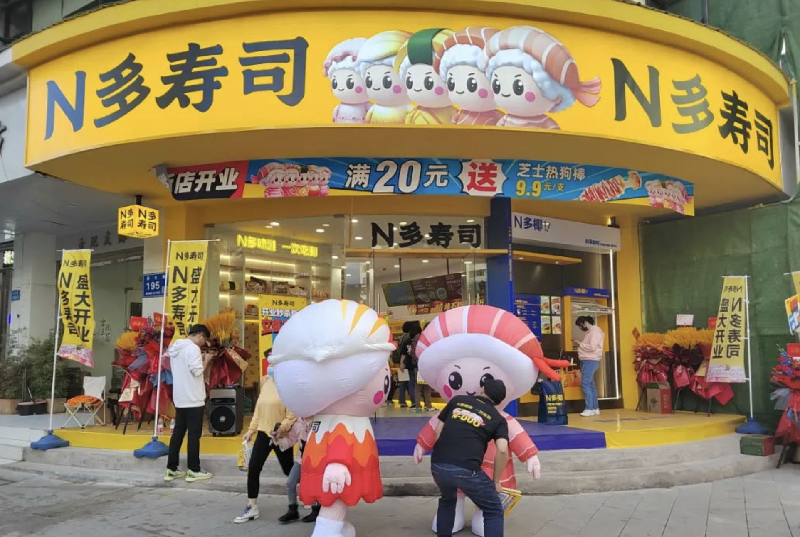
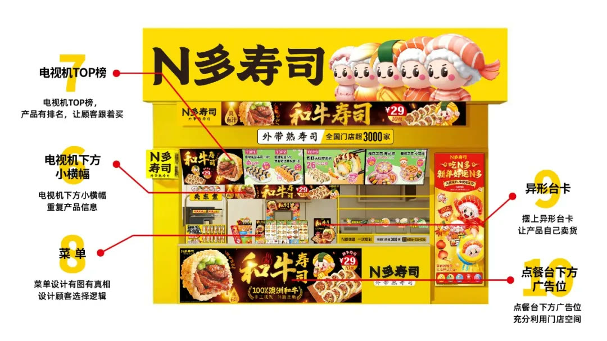
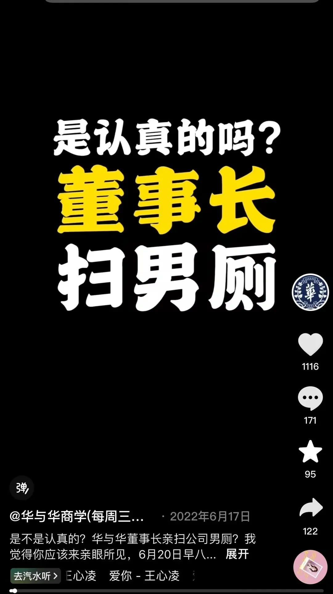

01 · 战略
用一句话集中连锁事业目标
“不洗碗，做万店”既描述产品与经营模型，也为加盟伙伴提供清晰愿景，让组织理解企业要把什么模式复制到更大规模。

02 · 符号
超级符号为规模扩张提供统一识别
门头、包装和物料持续重复同一符号，使新增门店从开业第一天就继承品牌认知。

03 · 节拍
组织生活会建立连锁管理节奏
加盟体系需要持续对齐经营标准与品牌动作。固定会议把问题、行动与复盘组织起来，避免总部与门店各自为战。

04 · 文化
组织文化让共同目标进入日常行动
文化不是墙上的价值观，而是权力、责任和行动规则。共同语言帮助加盟伙伴与总部围绕同一目标协作。
